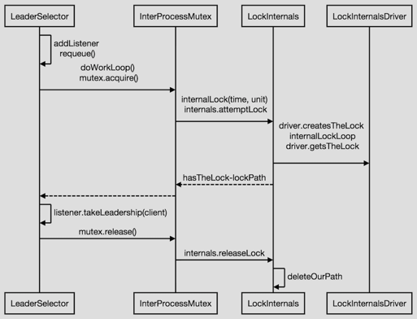

使用 zookeeper 提供的基本操作实现分布式系统的领导者选举是比较常见的方式。通常使用顺序 znode 来为那些竞争锁的进程强制排序，在任何时间点，持有锁的那个进程就是系统的领导者。思路如下：
- 首先指定一个作为锁的 znode，通常用它来描述被锁定的实体，称为 /leader。
- 然后希望获得锁的客户端创建 EPHEMERAL_SEQUENTIAL znode，作为锁 znode 的子节点。
- 在任何时间点，顺序号最小的客户端将持有锁。列如，有两个客户端差不多同时创建 znode，分别为 /leader/lock-1 和 /leader/lock-2，那么创建 /leader/lock-1 的客户端将持有锁。zookeeper 服务是负责分配顺序号。
- 通常删除 znode /leader/lock-1 即可简单地将锁释放；另外，如果客户端进程退出，对应的 EPHEMERAL_SEQUENTIAL znode 也会被删除。接下来，创建 /leader/lock-2 的客户端将持有锁，因为它顺序号紧跟前一个。
- 通过创建一个关于 znode 删除的的观察，可以使客户端在获得锁时得到通知。
如下是申请获取锁的伪代码：
- 在锁 znode 下创建一个名为 lock- 的 EPHEMERAL_SEQUENTIAL znode， 并且记住它的实际路径名(create 操作的返回值)。
- 查询锁 znode 的子节点并且设置一个 watch。
- 如果步骤 1 中创建的 znode 在步骤 2 中所返回的所有子节点中具有最小的顺序号，则获取到锁。退出。
- 等待步骤 2 中所设 watch 的通知并且转到步骤 2。
按照如上描述，即可实现基本的分布式领导者选举，但是还是存在一些问题。
羊群效应
如果客户端较多，所有的客户端都在尝试获得锁，每个客户端都会在锁 znode 上设置一个watch，每次锁被释放或另外一个进程开始申请获取锁的时候，watch 都会被触发并且每个客户端都会收到一个通知。
为了避免羊群效应，关键在于只有在前一个顺序号的子节点消失时才需要通知下一个客户端。即 watch 前一个 znode。
可恢复的异常
申请锁时还需要避免因连接丢失而导致的 create 操作失败。由于创建一个 EPHEMERAL_SEQUENTIAL znode 是非幂等操作，所以我们简单地重试，重试可能会多出一个永远删除不掉的孤儿 znode ，出现死锁。
通过在 znode 的名称中嵌入一个 ID，重新连接之后便可以对锁节点的所有子节点进行检查，看看是否有子节点的名称中包含其 ID。客户端会话的 ID 是一个长整形，并且在 zookeeper 服务中是唯一的，因此非常适合在连接丢失后用于识别客户端。
不可恢复的异常
如果一个客户端的 zookeeper 会话过期、连接丢失，那么它所创建的 EPHEMERAL_SEQUENTIAL znode 将会被删除，已持有的锁会被释放，或是放弃了申请锁的位置。 使用锁的应用程序应当意识到它已经不再持有锁，应当清理它的状态，然后通过创建并尝试申请一个新的锁对象来重新启动。
以上实现描述与问题优化处理，在 Apache Curator 的 LeaderLatch 中很好的做了实现。具体细节看下文描述。
What is Curator?
LeaderSelector
curator example
List<CuratorFramework> clients = Lists.newArrayList();
List<ExampleClient> examples = Lists.newArrayList();
TestingServer server = new TestingServer();
try {
for (int i = 0; i < CLIENT_QTY; ++i) {
CuratorFramework client = CuratorFrameworkFactory.newClient(server.getConnectString(), new ExponentialBackoffRetry(1000, 3));
clients.add(client);
ExampleClient example = new ExampleClient(client, PATH, "Client #" + i);
examples.add(example);
client.start();
example.start();
}
System.out.println("Press enter/return to quit\n");
new BufferedReader(new InputStreamReader(System.in)).readLine();
} finally {
System.out.println("Shutting down...");
for (ExampleClient exampleClient: examples) {
CloseableUtils.closeQuietly(exampleClient);
}
for (CuratorFramework client: clients) {
CloseableUtils.closeQuietly(client);
}
CloseableUtils.closeQuietly(server);
}
ExampleClient 的定义：
public class ExampleClient extends LeaderSelectorListenerAdapter implements Closeable {
private final String name;
private final LeaderSelector leaderSelector;
private final AtomicInteger leaderCount = new AtomicInteger();
public ExampleClient(CuratorFramework client, String path, String name) {
this.name = name;
// create a leader selector using the given path for management
// all participants in a given leader selection must use the same path
// ExampleClient here is also a LeaderSelectorListener but this isn't required
leaderSelector = new LeaderSelector(client, path, this);
// for most cases you will want your instance to requeue when it relinquishes leadership
leaderSelector.autoRequeue();
}
public void start() throws IOException {
// the selection for this instance doesn't start until the leader selector is started
// leader selection is done in the background so this call to leaderSelector.start() returns immediately
leaderSelector.start();
}
@Override
public void close() throws IOException {
leaderSelector.close();
}
@Override
public void takeLeadership(CuratorFramework client) throws Exception {
// we are now the leader. This method should not return until we want to relinquish leadership
final int waitSeconds = (int) (5 * Math.random()) + 1;
System.out.println(name + " is now the leader. Waiting " + waitSeconds + " seconds...");
System.out.println(name + " has been leader " + leaderCount.getAndIncrement() + " time(s) before.");
try {
Thread.sleep(TimeUnit.SECONDS.toMillis(waitSeconds));
} catch (InterruptedException e) {
System.err.println(name + " was interrupted.");
Thread.currentThread().interrupt();
} finally {
System.out.println(name + " relinquishing leadership.\n");
}
}
}
实现过程简述
start()

-
LeaderSelector 的 start() 方法被调用后，添加 LeaderSelectorListener，requeue() 调用 internalRequeue() 方法，判断是否为 autoRequeue， 如果是则递归调用 internalRequeue() 方法。通过 CloseableExecutorService 执行doWorkLoop()方法，然后调用 mutex.acquire() 阻塞获取锁，如果获取到锁，则调用 listener.takeLeadership(client) 通知客户端被选举为 leader；否则等待获取锁。
-
LockInternals 执行 attemptLock() 方法时，先是在 zookeeper 上创建一个 EPHEMERAL_SEQUENTIAL 类型的节点。然后循环 (循环结束的条件为：获取到锁，设置了 wait(millisToWait) ) 执行：调用 getSortedChildren() 获取该选举路径上所有排序过的 children 节点集合，然后判断当前节点是否为第一个顺序节点，即编号最小的节点。判断方法如下：
public PredicateResults getsTheLock(CuratorFramework client, List<String> children, String sequenceNodeName, int maxLeases) throws Exception {
int ourIndex = children.indexOf(sequenceNodeName);
validateOurIndex(sequenceNodeName, ourIndex);
//此处 maxLeases=1
boolean getsTheLock = ourIndex < maxLeases;
String pathToWatch = getsTheLock ? null : children.get(ourIndex - maxLeases);
return new PredicateResults(pathToWatch, getsTheLock);
}
- 当前节点不是 leader 时，需要设置 watcher，watch 的路径为当前节点的上一节点，以避免“羊群效应”。当 watch 到事件时 notifyAll() 唤醒被 wait() 的线程。
PredicateResults predicateResults = driver.getsTheLock(client, children, sequenceNodeName, maxLeases);
...
String previousSequencePath = basePath + "/" + predicateResults.getPathToWatch();
// use getData() instead of exists() to avoid leaving unneeded watchers which is a type of resource leak
client.getData().usingWatcher(watcher).forPath(previousSequencePath);
...
wait(millisToWait);
...
}
-
参加选举的节点一般继承 LeaderSelectorListenerAdapter 类，该节点被选举为 leader 节点后，takeLeadership 方法将被调用。
-
执行完3后，还需保证释放锁，以便其他选举节点能被选为 leader 节点。当然你可以在takeLeadership方法中一直循环持有 leader 节点。
close()
public synchronized void close()
{
Preconditions.checkState(state.compareAndSet(State.STARTED, State.CLOSED), "Already closed or has not been started");
// 移除需要通知的监听
client.getConnectionStateListenable().removeListener(listener);
// 关闭start()中启动的 CloseableExecutorService 执行任务
executorService.close();
// 设置为null,interruptLeadership()调用时不再执行task.cancel(true)
ourTask.set(null);
}
LeaderLatch
主要方法列表
创建 LeaderLatch
public LeaderLatch(CuratorFramework client, String latchPath)
public LeaderLatch(CuratorFramework client, String latchPath, String id)
latchPath : 领导者选举路径
id: 业务ID
启动 LeaderLatch
leaderLatch.start();
判断是否为 leader
public boolean hasLeadership()
与 JDK's CountDownLatch 类似，阻塞直到获得 leadership
public void await() throws InterruptedException, EOFException
public void await(long timeout,TimeUnit unit) throws InterruptedException, EOFException
关闭 leaderLatch
leaderLatch.close();
实现过程简述
start()
-
通过 AfterConnectionEstablished 执行 client.blockUntilConnected() ，确保正确连接后，再执行 leaderLatch。
-
在 latchPath 上创建 EPHEMERAL_SEQUENTIAL 节点
client.create().creatingParentContainersIfNeeded().withProtection().withMode(CreateMode.EPHEMERAL_SEQUENTIAL).inBackground(callback).forPath(ZKPaths.makePath(latchPath, LOCK_NAME), LeaderSelector.getIdBytes(id));
- 获取 latchPath 上的 children 节点，并调用 checkLeadership(children) 方法。
1) 执行 LockInternals.getSortedChildren(LOCK_NAME, sorter, children) 获取排序后的 sortedChildren 2) 查找当前节点在 sortedChildren 中的位置，如果 ourIndex < 0 ，重新从步骤 2 开始；如果 ourIndex == 0，调用setLeadership(true)；否则，watch 前一个节点路径， watch 到 NodeDeleted 事件时，再次执行步骤3。
- 调用 setLeadership() 设置 leader
private synchronized void setLeadership(boolean newValue) {
boolean oldValue = hasLeadership.getAndSet(newValue);
if (oldValue && !newValue) { // Lost leadership, was true, now false
listeners.forEach(new Function<LeaderLatchListener, Void>() {
@Override
public Void apply(LeaderLatchListener listener) {
listener.notLeader();
return null;
}
});
} else if (!oldValue && newValue) { // Gained leadership, was false, now true
listeners.forEach(new Function<LeaderLatchListener, Void>() {
@Override
public Void apply(LeaderLatchListener input) {
input.isLeader();
return null;
}
});
}
notifyAll();
}
connection 异常处理与 LeaderLatchListener 扩展
利用 Curator 对 connection 的统一管理，很好的实现了 connection 异常处理。
private void handleStateChange(ConnectionState newState) {
switch (newState) {
default: {
// NOP
break;
}
case RECONNECTED: {
try {
reset(); //重新尝试申请锁
} catch (Exception e) {
log.error("Could not reset leader latch", e);
setLeadership(false); //标示不再是leader
}
break;
}
case SUSPENDED:
case LOST: {
setLeadership(false); //标示不再是leader
break;
}
}
}
当被标示为 leader 或者不再为 leader 时，如下定义的 listener 被调用。
public interface LeaderLatchListener{
public void isLeader();
public void notLeader();
}
Comments !